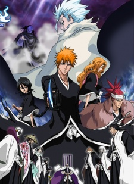
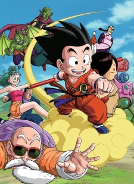

This is my opion of the top five anime. this list is not in any order. Again this is MY opion you do not have to agree with it, it's open for debate.
Naruto/Naruto Shippuden
Moments prior to Naruto Uzumaki's birth, a huge demon known as the Kyuubi(The Nine-Tailed Fox) attacked the Hidden Leaf Village, and wreaked havoc.
In order to put an end to the Kyuubi's rampage, the leader of the village, the Fourth Hokage, sacrificed his life and sealed the monstrous beast inside the newborn Naruto.
Now, Naruto is a hyperactive and knuckle-headed ninja still living in Konohagakure. Shunned because of the Kyuubi inside him, Naruto struggles to find his place in the village.
while his burning desire to become the Hokage of Konohagakure leads him not only to some great new friends, but also some deadly foes.
One Piece
Gol D. Roger was known as the Pirate King, the strongest and most infamous being to have sailed the Grand Line.
The capture and death of Roger by the World Government brought a change throughout the world.
His last words before his death revealed the location of the greatest treasure in the world, One Piece.
It was this revelation that brought about the Grand Age of Pirates, men who dreamed of finding One Piece (which promises an unlimited
amount of riches and fame), and quite possibly the most coveted of titles for the person who found it, the title of the Pirate King.
Enter Monkey D. Luffy, a 17-year-old boy that defies your standard definition of a pirate.
Rather than the popular persona of a wicked, hardened, toothless pirate who ransacks villages for fun, Luffy’s reason for being a
pirate is one of pure wonder. the thought of an exciting adventure and meeting new and intriguing people, along with finding "One Piece",
are his reasons of becoming a pirate. Following in the footsteps of his childhood hero, Luffy and his crew travel across the Grand Line,
experiencing crazy adventures, unveiling dark mysteries and battling strong enemies, all in order to reach One Piece.
Bleach

Bleach follows the adventures of the hotheaded teenager Ichigo Kurosaki, who inherits his parents' destiny after he obtains
the powers of a Soul Reaper (死神 Shinigami, literally 'Death God')
a death personification similar to the Grim Reaper—from another Soul Reaper, Rukia Kuchiki.
Dragon Ball ("series")

Dragon Ball follows the adventures of the protagonist Goku, a strong naive boy who, upon meeting Bulma, sets out to gather the seven
wish-granting Dragon Balls. ... Goku later faces Piccolo who is at an old age to no avail, and takes his Dragon Ball from him.
Code Geass
Lelouch a prince of Britannia in hiding in Japan. His goals are simple: He wants to kill his father, the Emperor, for abandoning him
and his crippled sister Nunnally after the assassination of their mother. ... Power in hand, Lelouch starts his quest for revenge
Below is a few websites that you can watch anime on